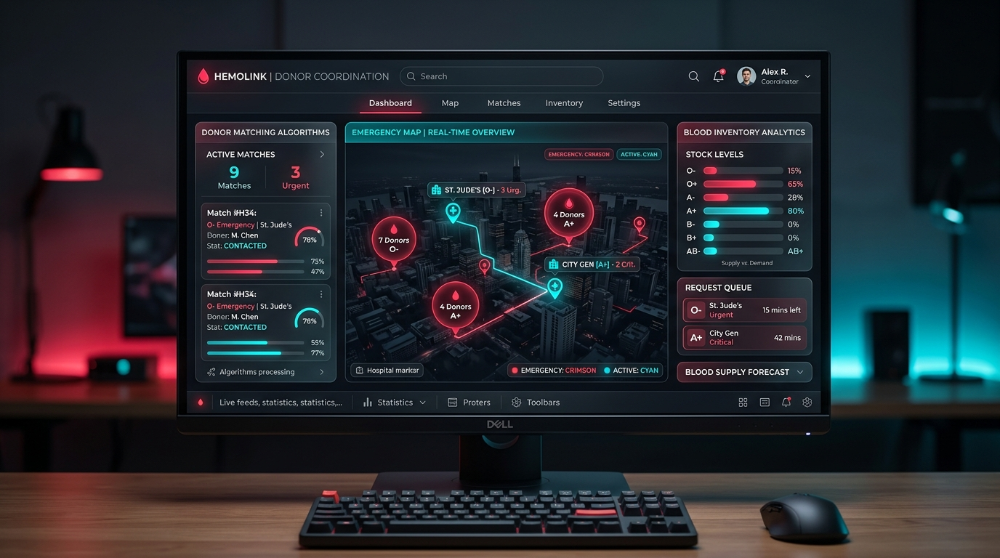
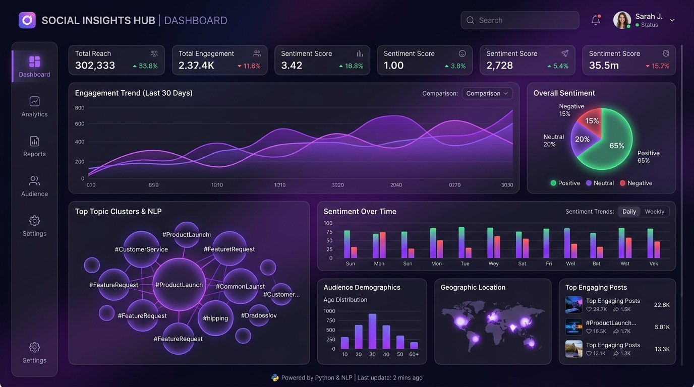
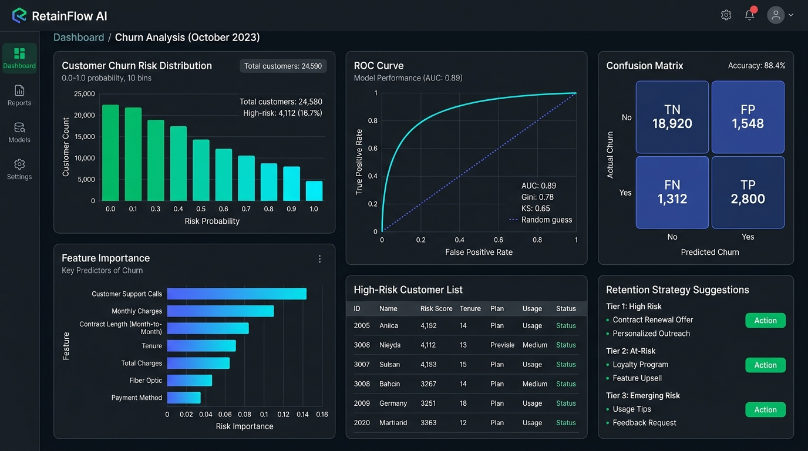

Seeking Entry-Level Roles in AI, Data & Software
Hello, world! I'm
G. T. Vasanthaprabhu
I am an
AI/ML Engineer
Motivated and dedicated Computer Science Engineering graduate from R.V.S. College of Engineering (CGPA 8.33) with a solid foundation in Python, Generative AI (LLMs & RAG), SQL, and Full-Stack Web Development. Passionate about engineering intelligent, scalable digital solutions for real-world impact.
8.33 CGPA
R.V.S. College of Eng.
GenAI & Web
RAG • LLMs • Full Stack
8.33
Engineering CGPA (B.E. CSE)
3+
Flagship Software & AI Projects
10+
Technical Skills & Frameworks
2026
CSE Graduate Year
About & Background
Bridging Engineering, AI & Code
A quick look into my professional mission, academic track record, and communication proficiencies.
Career Objective & Vision
Motivated, enthusiastic, and dedicated Computer Science Engineering graduate with a strong foundation in Python, SQL, Generative AI, and Data Analytics. Seeking an entry-level opportunity in software development, data analytics, or artificial intelligence where I can apply my technical knowledge, programming skills, and problem-solving abilities to real-world challenges.
I am eager to learn new technologies, work collaboratively with multidisciplinary engineering teams, develop efficient and innovative solutions, and contribute to the growth and success of the organization while continuously improving my technical and professional skills.
Key Strengths
-
✔
Generative AI & LLMs: Hands-on implementation of RAG pipelines, fine-tuning workflows, and NLP analytics.
-
✔
Full-Stack Problem Solver: Experienced with modern JavaScript, ReactJS, Python backends, and SQL schemas.
-
✔
Analytical Mindset: Data preprocessing, exploratory analysis (EDA), and machine learning classification.
-
✔
Agile & Collaborative: Industry internship experience with team-driven sprints and clean code practices.
Academic Education
R.V.S. COLLEGE OF ENGINEERING
CGPA: 8.33 / 10
Bachelor of Engineering (B.E.) – Computer Science and Engineering, Dindigul
2022 – 2026 • Undergraduate Degree
VISWA VIDHYALAYA MATRIC HIGHER SEC SCHOOL
HSC: 77%
SSLC: 86%
Higher Secondary Certificate & Secondary School Leaving Certificate
Matriculation Secondary & Higher Secondary Education
Languages
Tamil
Mother Tongue
Native
English
Professional Communication
Conversational
Technical Matrix
Core Skills & Technologies
Specialized technical proficiencies spanning Artificial Intelligence, Full-Stack Development, and Data Systems.
Generative AI & LLMs
Advanced Focus
Building intelligent agents, LLM integrations, Retrieval-Augmented Generation (RAG) architectures, and fine-tuning pipelines.
Machine Learning & NLP
Core Competency
Supervised classification, natural language processing, deep learning fundamentals, and predictive modeling.
Python Ecosystem
Primary Language
End-to-end Python programming for algorithmic solutions, backend scripting, automation, and statistical computing.
SQL & Databases
Data Persistence
Relational database query design, joins, normalization, schema modeling, and backend database integrations.
Frontend & ReactJS
Web Architecture
Interactive user interfaces with ReactJS, modular component design, responsive mobile-first layouts, and state management.
Data Analytics
Insights & EDA
Transforming raw unstructured data into actionable strategic insights via exploratory analysis, trend identification, and data visualization.
Work Experience
Industry Internship
Real-world corporate exposure in modern software development and web-based engineering practices.
Full Stack Web Development Intern
Main Flow Services and Technologies Pvt. Ltd.
05/07/2025 – 05/08/2025
- Gained hands-on exposure to the end-to-end web application development process, from frontend layouts to backend connectivity.
- Worked on practical development tasks with a focus on building, debugging, and improving scalable, user-centric web solutions.
- Enhanced deep understanding of application directory structures, modern development workflows, and robust technical implementation standards.
- Contributed effectively during team activities, technical standups, and peer reviews while strengthening communication and cross-functional coordination skills.
- Improved analytical thinking, attention to detail, adaptability, and professional engineering work practices through rigorous project-based learning.
Engineering Portfolio
Featured Projects
Real-world applications applying AI, machine learning classification, data intelligence, and full-stack software.


Curriculum Vitae
Professional Resume
Verified academic qualifications, technical proficiencies, engineering projects, and corporate internship.
G.T.VASANTHAPRABHU
CAREER OBJECTIVE
Motivated Enthusiastic and dedicated Computer Science Engineering graduate with a strong foundation in Python, SQL, Generative AI, and Data Analytics. Seeking an entry-level opportunity in software development, data analytics, or artificial intelligence where I can apply my technical knowledge, programming skills, and problem-solving abilities to real-world challenges. I am eager to learn new technologies, work collaboratively with teams, develop efficient and innovative solutions, and contribute to the growth and success of the organization while continuously improving my technical and professional skills.
EDUCATION
R.V.S. COLLEGE OF ENGINEERING
2022-2026
Bachelor of Engineering (B.E.) – Computer Science and Engineering,Dindigul
CGPA:8.33
VISWA VIDHYALAYA MATRIC HIGHER SEC SCHOOL
HSC:77%
Higher Secondary Education
SSLC:86%
TECHNICAL SKILLS
PROGRAMMING LANGUAGES
- Python
- CSS
- ReactJS
- HTML
- JavaScript
QUERY LANGUAGES
- SQL
GENERATIVE AI
- Machine Learning
- Deep Learning
- NLP, LLM
- RAG – FineTuning
PROJECTS
Real Time Smart Blood Donation Coordination System
2025-2026
- Developed a centralized platform to connect hospitals and eligible blood donors in real time.
- Matches donors based on blood group, location, and eligibility.
- Enables hospitals to send blood requests and provides instant notifications to suitable donors.
- Reduces manual coordination and delays in blood availability, supporting faster emergency response.
Social Media Analytics Using Python
2026
- Analyzed social media data to identify engagement patterns and user interaction trends.
- Used Python for data processing, analysis, and extracting meaningful insights.
- Performed data analysis to understand social media performance and audience behavior.
Customer Churn Prediction
2026
- Developed a machine learning project using Python to predict customer churn.
- Performed data preprocessing and exploratory data analysis using Pandas and NumPy.
- Analyzed customer patterns to identify factors affecting customer retention.
INTERNSHIP
Full Stack Web Development Intern
2025
Main Flow Services and Technologies Pvt. Ltd.
05/07/2025 – 05/08/2025
- Gained hands-on exposure to the end-to-end web application development process.
- Worked on practical development tasks with a focus on building and improving web-based solutions.
- Enhanced understanding of application structure, development workflow, and technical implementation.
- Contributed effectively during team activities while strengthening communication and coordination skills.
- Improved analytical thinking, attention to detail, adaptability, and professional work practices through project-based learning.
LANGUAGES
- Tamil (Native)
- English (Conversational)